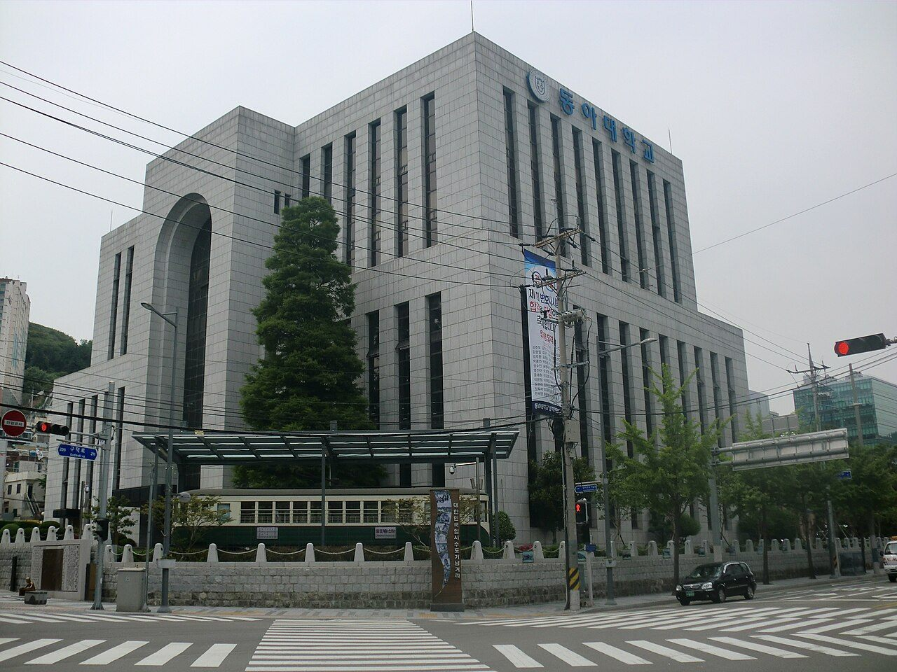

동아대학교는 부산에 있는 사립 종합대학입니다. 사하구 승학캠퍼스, 서구 부민캠퍼스, 구덕캠퍼스 세 곳을 운영하고 있습니다.
2027학년도 수시 원서접수는 2026년 9월 7일부터 11일까지로 이미 마감됐습니다. 그럼에도 이 대학을 정리해 두는 이유는, 모집 구조 자체가 다른 대학과 눈에 띄게 다르기 때문입니다. 전체 모집 인원의 88.7%를 수시로 뽑습니다. 그리고 계열과 관계없이 전 전형에서 교차지원을 허용합니다. 고1·고2 자녀를 두셨다면 지원 전략을 짤 때 참고가 되실 겁니다.
먼저 공개된 수치입니다.
- 전체 모집 인원 4,561명 중 수시가 4,048명(88.7%), 정시가 513명입니다.
- 수시 안에서는 학생부교과 1,990명, 학생부종합 1,788명, 실기·실적 270명입니다.
- 정시는 수능 460명, 실기·실적 53명입니다.
- 광역 모집단위(자유전공 계열)를 102명으로 늘렸습니다. 전년보다 50명 증가한 규모입니다.
① 수시 88.7% — 이 숫자가 실제로 뜻하는 것
열 자리 중 아홉 자리 가까이가 수시입니다. 이 구조에서 학부모님이 읽어 내셔야 할 것은 하나입니다. 이 대학을 목표로 한다면 수능보다 학교생활기록부가 먼저라는 뜻입니다.
특히 학생부교과가 1,990명으로 가장 큽니다. 내신이 가장 넓은 문이라는 의미입니다. 학생부종합 1,788명도 적지 않아서, 교과와 종합 중 어느 쪽이 유리한지를 아이의 성향에 맞춰 일찍 정해 둘 필요가 있습니다.
반대로 말하면, 정시 513명을 노리는 전략은 이 대학에서 문이 좁습니다. 수능 하나만 붙잡고 3년을 보내는 계획은 이 대학과 잘 맞지 않습니다.
② 전 전형 교차지원 허용 — 문이 낮아진 만큼 경쟁자도 넓어집니다
이번 전형의 가장 큰 특징입니다. 계열과 관계없이 모든 전형에서 교차지원을 허용합니다. 인문계열 학생이 자연계열 모집단위에, 자연계열 학생이 인문계열 모집단위에 지원할 수 있다는 뜻입니다.
이 대목에서 학부모님들이 두 가지로 갈리십니다. “그럼 선택지가 넓어져서 좋은 것 아니냐”와 “그래도 되나”입니다. 둘 다 반은 맞습니다.
- 좋은 점 — 고2 과목 선택이 어긋나도 지원 자체가 막히지 않습니다. 진로를 늦게 정한 학생에게는 실질적인 여유가 생깁니다.
- 주의할 점 — 내가 지원할 수 있다는 건 다른 계열 학생도 그 자리에 지원한다는 뜻입니다. 지원 자격이 넓어지면 경쟁자 풀도 같이 넓어집니다.
그리고 지원이 가능한 것과 합격 후에 수업을 따라가는 것은 다른 문제입니다. 자연계열 전공은 입학 후 수학·과학 기초를 전제로 진도가 나갑니다. 교차지원을 고려하신다면 “넣을 수 있나”가 아니라 “들어가서 버틸 수 있나”까지 같이 보셔야 합니다.
③ 새로 생긴 두 전형 — 지역의사제와 교과진로우수자
2027학년도에 전형 두 개가 신설됐습니다.
- 지역의사제전형(학생부종합) — 지역 의료에 기여할 인재를 뽑겠다는 취지로 만들어진 전형입니다. 면접은 2026년 11월 27일에 진행되는 것으로 안내됐습니다.
- 교과진로우수자전형(학생부교과) — 진로에 대한 이해도와 학업 역량을 함께 평가하는 전형으로 안내됐습니다.
지역의사제는 최근 여러 대학에서 신설되고 있는 전형인데, 공통적으로 졸업 후 일정 기간 해당 지역에서 의무적으로 근무하는 조건이 붙는 제도로 운영됩니다. 다만 동아대의 모집 인원과 지원 자격 세부 요건, 의무복무 조건의 구체적 내용은 이 글을 쓰는 시점에 공개 자료로 확인하지 못했습니다. 확인하지 못한 조건은 이 글에 적지 않았습니다.
의대를 생각하고 계신 가정이라면 이 전형은 반드시 모집요강 원문을 직접 읽어 보셔야 하는 영역입니다. 의무복무가 걸린 제도는 합격 이후의 인생 설계가 달라지는 문제라, 요약본으로 판단할 사안이 아닙니다.
④ 잠재능력우수자전형 1단계가 5배수로 늘었습니다
기존 학생부종합 전형인 잠재능력우수자전형에서 1단계 합격자 선발 규모를 5배수로 확대했습니다.
1단계 배수가 늘어난다는 것은 서류 단계에서 더 많은 인원이 면접 기회를 받는다는 뜻입니다. 학부모님 입장에서 읽으실 대목은 이겁니다.
- 서류(학생부) 경쟁력이 조금 부족해도 2단계로 넘어갈 가능성은 커졌습니다.
- 대신 2단계에서 뒤집힐 폭도 커졌습니다. 면접 준비의 중요도가 올라갑니다.
다만 1단계와 2단계의 반영 비율, 면접 방식과 시간은 공개 자료에서 확인하지 못했습니다. 배수만 보고 유불리를 단정하기는 어렵고, 반영 비율까지 확인하셔야 실제 판단이 가능합니다.
⑤ 진로선택과목 환산 방식 변경 — 고1·고2가 눈여겨볼 대목
실무적으로 가장 중요한 변화일 수 있습니다. 진로선택과목의 성적 환산 방식이 A→1등급, B→3등급, C→5등급으로 바뀌었습니다.
진로선택과목은 석차등급 대신 A·B·C 세 단계로 성취도가 나오는 과목입니다. 이걸 대학이 몇 등급으로 쳐 주느냐에 따라 내신 산출 결과가 달라집니다.
이번 방식에서 눈에 띄는 건 A와 B의 간격입니다. 1등급과 3등급, 두 등급 차이입니다. B와 C도 마찬가지로 두 등급 차이입니다. 즉 A를 받느냐 B를 받느냐가 생각보다 크게 벌어집니다.
고1·고2 학부모님께 드리고 싶은 말씀은 이것입니다. 진로선택과목은 ‘등급이 안 나오는 과목’이라는 이유로 아이들이 힘을 빼는 경우가 많습니다. 그런데 대학이 이렇게 환산한다면 A를 받아 두는 것이 실제 점수로 돌아옵니다. 학기 초에 “이 과목은 부담 없다”고 판단하기 전에 한 번 더 생각해 보실 일입니다.
⑥ 지역인재와 수능최저 — 확인하셔야 할 것
부산·울산·경남권 학생이라면 지역인재전형이 후보에 들어갑니다. 동아대도 지역인재 관련 전형을 운영해 왔습니다.
지역인재에서 학부모님들이 가장 자주 오해하시는 지점을 짚겠습니다.
- 주소지가 아니라 학교가 기준입니다. 해당 권역에 살아도 학교를 다른 권역에서 다녔다면 자격이 생기지 않습니다.
- 2027학년도까지는 해당 권역 고등학교에서 전 교육과정 이수(3년)가 기준입니다. 고2 때 전학해서는 해당되지 않습니다.
- 중학교 과정까지 거주·이수를 함께 보는 강화 요건은 2028학년도부터 적용됩니다. 지금 중학생 자녀를 두셨다면 남 일이 아닙니다.
수능최저학력기준에 대해서는 분명히 말씀드리겠습니다. 2027학년도 동아대의 전형별·모집단위별 수능최저 적용 여부와 기준은 이 글을 쓰는 시점에 공개 자료로 확인하지 못했습니다. 의약계열에 수능최저가 붙는 것은 일반적이지만, 일반적이라는 것과 이 대학 올해 기준이 그렇다는 것은 다른 말입니다. 확인되지 않은 기준은 적지 않았습니다.
수능최저는 한 등급 차이로 지원 자체가 무의미해지는 조건입니다. 반드시 입학처 모집요강에서 본인이 쓸 모집단위 기준으로 직접 확인하셔야 합니다.
⑦ 고1·고2가 지금 할 일
이 대학을 후보에 놓고 계신다면, 학년별로 해야 할 일이 다릅니다.
- 고1 — 진로선택과목을 가볍게 보지 마십시오. A와 B의 간격이 두 등급으로 환산되는 구조라면, 1학년 때 만든 성취도가 그대로 따라옵니다.
- 고2 — 교과와 종합 중 어느 쪽을 주 전형으로 삼을지 정하십시오. 학생부교과 1,990명이 가장 큰 문이라는 사실이 출발점입니다.
- 고2 — 교차지원이 열려 있다고 해서 과목 선택을 아무렇게나 해도 되는 것은 아닙니다. 지원은 되지만 입학 후 수업은 별개입니다.
- 부산·울산·경남 재학생 — 지역인재 자격(3년 전 교육과정 이수)에 해당하는지 지금 확인해 두십시오. 전학 계획이 있다면 특히 그렇습니다.
- 의대 지망 — 지역의사제전형의 지원 자격과 의무복무 조건을 모집요강 원문으로 확인하십시오. 요약 기사만으로 결정할 사안이 아닙니다.
마무리 — 모집 구조를 먼저 읽어야 하는 이유
대학을 볼 때 많은 분들이 ‘몇 등급이면 가나’부터 물으십니다. 자연스러운 질문입니다. 그런데 그 질문에 답이 나오려면 그 앞에 놓인 질문이 먼저 풀려야 합니다. 이 대학은 어떤 방식으로 사람을 뽑는가.
동아대는 수시가 88.7%이고, 교차지원이 열려 있고, 진로선택과목 A와 B의 간격을 두 등급으로 봅니다. 이 세 가지만 알아도 3년을 어떻게 설계할지가 꽤 달라집니다. 같은 등급이라도 어떤 과목에서 만든 등급인지, 어떤 전형으로 갈 것인지에 따라 결과가 갈리기 때문입니다.
그래서 저희가 상담에서 늘 드리는 말씀은 같습니다. 목표 대학을 정하는 일은 숫자를 정하는 일이 아니라 방식을 정하는 일입니다. 1학년부터 3학년 1학기까지 성적이 어느 방향으로 움직였는지, 그 흐름이 그 대학이 보려는 것과 맞는지가 수시에서는 등급 하나보다 많은 것을 말해 줍니다.
와와 학습코칭센터에서는 아이의 학년과 성적 흐름에 맞춰 목표 대학과 전형을 함께 정리해 드립니다. 교과로 갈지 종합으로 갈지부터 막막하시다면, 가까운 센터에서 상담을 신청해 보세요.
※ 본 글은 동아대학교 2027학년도 수시모집 관련 언론 보도와 공개된 입시 안내 내용을 바탕으로 정리했습니다. 인용한 모집 인원과 전형 변경 사항은 보도 시점에 발표된 내용입니다. 전형별 세부 모집인원과 선발 방법, 모집단위별 인원, 학생부 반영 교과와 등급 환산 방식, 전형요소 반영 비율, 면접 실시 여부와 반영 비율, 전형별·모집단위별 수능최저학력기준의 적용 여부와 기준, 지역인재전형의 세부 지원 자격과 모집 규모, 지역의사제전형의 모집 인원·지원 자격·의무복무 조건, 실기 전형과 정원 외 전형의 세부 요건, 합격자 발표 일정은 확인하지 못해 이 글에 담지 않았습니다. 확인되지 않은 숫자와 기준은 기재하지 않았습니다. 사진은 과거에 촬영된 것으로 현재 모습과 다를 수 있습니다. 세부 사항은 모집요강에서 확정되며 변경될 수 있으므로, 반드시 동아대학교 입학처의 2027학년도 수시모집요강 원문에서 본인 지원 모집단위 기준으로 최종 확인하시기 바랍니다.